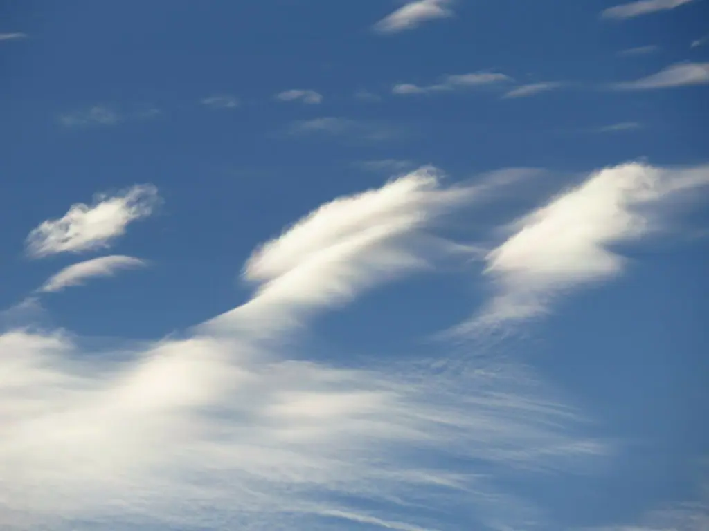
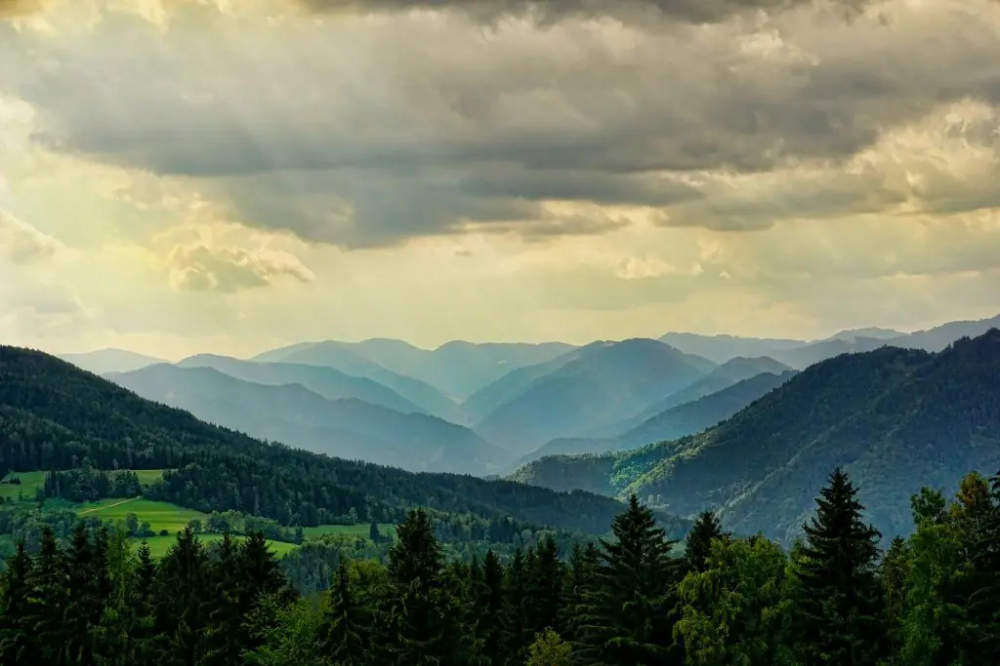
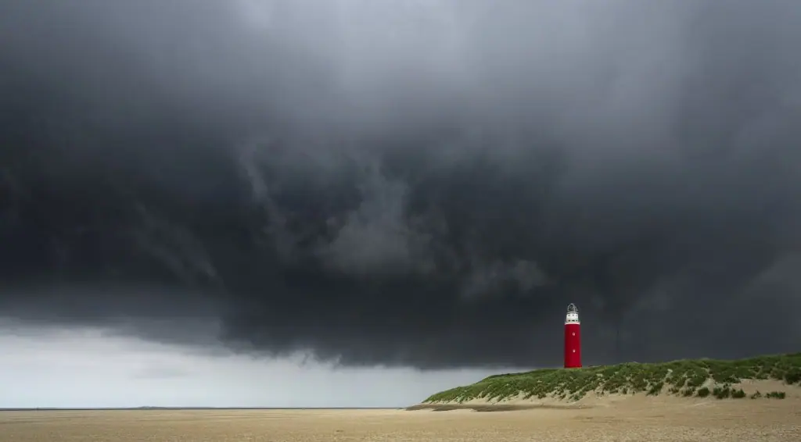

FA_UD2_Características del clima y microclima
FUNDAMENTOS AGRONÓMICOS
UD 2
CARACTERÍSTICAS DEL CLIMA Y MICROCLIMA
METEOROS
Los fenómenos meteorológicos o meteoros los podemos clasificar como los elementos más visibles que nos indican los fenómenos físicos naturales que se dan en la atmósfera. Entre ellos se encuentran las nubes, el viento y la lluvia y surgen como resultado de la combinación de los distintos elementos climatológicos que hemos visto.
Las nubes se forman por la condensación del vapor de agua (humedad relativa) que hay en una masa de aire en la atmósfera en un momento dado, que esta masa de aire se mueva o se esté quieta va depender fundamentalmente de las variaciones de presión atmosférica que se producen a su alrededor, el vapor de agua se evapora y condensa por variaciones de temperatura. Si la temperatura, la humedad y la presión son los elementos fundamentales que van a determinan el clima; el viento, las nubes y las precipitaciones son los fenómenos físicos que más fácilmente vamos a apreciar.
Nubes
Para simplificar un poco diremos que la mayoría de las nubes tienen su origen en corrientes de aire ascendente, el aire se enfría al elevarse y el vapor de agua que contiene acaba por formar una masa nubosa. Las nubes están formadas por millones de gotitas de agua microscópicas, como las que forman cuando tapamos una olla y ponemos a hervir.
La mayoría de los nombres de nubes contienen prefijos y sufijos latinos que, al combinarse, dan una indicación del tipo de nube. Algunos de ellos son los siguientes:
-
Stratus/estrato: alargado, allanado y nivelado. Nubes estratificadas.
-
Cumulus/cúmulos: montón, colmo. Nubes de desarrollo vertical.
-
Cirrus/cirro: plumoso, fleco. Nubes de cristales de hielo.
-
Nimbus/nimbo: portador de lluvia, capaces de formar precipitaciones
-
Alto: nivel medio
Las nubes altas suelen formarse por encina de los 5.000 metros; las nubes medias se suelen formar entre los 2.000 y los 7.000 metros; y las nubes bajas suelen formarse a una altura máxima de 2.000 metros.
La Organización Meteorológica Mundial clasifica las nubes en diez tipos principales:
CIRROS
Nubes separadas, en forma de filamentos blancos y delicados, de aspecto fibroso o sedoso, o ambas cosas a la vez, formadas por cristales de hielo, que le dan su peculiar aspecto. Cuando se presentan aislados son síntoma de buen tiempo, pero si avanzan organizados y aumentando progresivamente indican un cambio inminente del tiempo: algún frente o borrasca se aproxima.
{width=50%}
CIRROCÚMULOS
Capa delgada de nubes blancas, sin sombras propias, compuesto de elementos muy pequeños en forma de gránulos, mezclados o separados, dispuestos más o menos regularmente (a veces según bandas que cruzan el cielo, dándole aspecto de "cielo aborregado").
Salvo si aumentan considerablemente con el paso del tiempo, no suelen indicar cambio de tiempo. Otras veces aparecen asociados a corrientes en chorro a gran altura.
{width=50}
CIRROSTRATOS
Género de nubes en forma de velo blanquecino y transparente, de estructura fibrosa o lisa, que cubren de modo total o parcial el cielo. Este tipo de nubes suele producir un halo solar o lunar.
Los cirrostratos suelen anunciar cambios, se acerca un frente cálido y aumentan su espesor según este avanza.
 {width=50%}
{width=50%}
ALTOCÚMULOS
Capa de nubes blancas o grises, o de ambas tonalidades a la vez, con sombras propias, y compuesto por láminas, masas redondeadas, rodillos, etc., que pueden estar unidas o no, y de aspecto a veces difuso.
Los altocúmulos aislados son indicadores de buen tiempo. Cuando van en aumento o mezclados con altostratos indican la proximidad de un frente o una borrasca, y en tales casos pueden desprender precipitaciones débiles.
 {width=50%}
{width=50%}
ALTOSTRATOS
Capa nubosa, grisácea o azulada, con aspecto estriado, que cubre el cielo total o parcialmente, presentando partes delgadas que permiten ver vagamente el Sol.
Están asociados a frentes cálidos y suelen dejar lluvias débiles continuas.
 {width=50%}
{width=50%}
NIMBOSTRATOS
Nubes densas de color gris oscuro, cuyo aspecto se hace difuso por la caída de precipitación. El notable espesor en todas sus partes oculta la visión del Sol. Están asociados a los frentes cálidos y suelen ocasionar lluvias continuas.
 {width=50$}
{width=50$}
ESTRATOCÚMULOS
Manto de nubes grises o blancas, o de ambos colores a la vez, que tienen casi siempre partes oscuras, y con forma de pesados rodillos o masas globulares alargadas, de aspecto no fibroso, y dispuestas según largas bandas paralelas que cubren todo o gran parte del cielo.
No indican cambios de tiempo y se asocian al buen tiempo cuando en verano aparecen a media tarde.
{width=50%}
ESTRATOS
Capa nubosa gris y uniforme, sin forma particular, ni estructura, que por lo general cubre completamente el cielo.
Cuando producen nieblas suelen estar asociados a tiempo anticiclónico. Si aparecen debajo de los altostratos o nimbostratos se asocian a un frente cálido y pueden dejar lloviznas.
{width=50%}
CÚMULOS
Nubes aisladas, por lo general densas, y de contornos bien delimitados, que se desarrollan verticalmente en forma de torres con forma de coliflor. Estas nubes suelen ser de un blanco brillante arriba y algo oscuras en su base, casi perfectamente horizontal.
Los cúmulos corresponden al buen tiempo cuando hay poca humedad ambiental y poco movimiento vertical del aire. En el caso de existir una alta humedad y fuertes corrientes ascendentes, los cúmulos pueden adquirir un gran tamaño llegando a originar tormentas y aguaceros intensos.
 {width=50%}
{width=50%}
CUMULONIMBOS
Nubes densas y grandes, de gran desarrollo vertical, en forma de torres gigantescas, cuyo extremo superior es liso o fibroso, y casi siempre achatado con forma de yunque.
Producen casi siempre tormenta con precipitaciones en forma de lluvia o granizo.
{width=50%}

Precipitaciones
Las nubes están formadas por pequeñas gotas microscópicas. La mayoría de las veces la lluvia se forma en nubes que están en zonas altas de la atmósfera donde se dan bajas temperaturas lo que hace coexistir pequeños cristales de hielo con las gotas microscópicas. Las gotitas microscópicas se van uniendo a los cristales de hielo haciéndose cada vez más grandes, al ser cada vez más grandes pesan más y tienden a caer, al ir descendiendo aumenta la temperatura en la atmósfera y los cristales de hielo se transforman en lluvia. Pero dependiendo de la temperatura y el grado de condensación, el agua que generalmente precipita en forma de lluvia líquida, también puede hacerlo en forma de cristales de hielo (nieve) o de masas densas de hielo de diverso tamaño (granizo).
Tipos de precipitación más característicos son:
-
Llovizna: también conocida como orballo, sirimiri o calabobos. Está formada por numerosas y finas gotas de agua de diámetro inferior a medio milímetro. La velocidad de caída es tan lenta que parecen flotar en el aire. Proceden típicamente de las nubes tipo estratos.
-
Lluvia: es la forma más común de precipitación. Las gotas tienen un diámetro de más de medio milímetro y caen con velocidad moderada. Procede casi siempre de los nimboestratos y altoestratos.
-
Chubascos: pueden ocasionar tormentas. Las gotas de agua son grandes. La precipitación es intensa, discontinua y ocasional. Si es torrencial puede provocar grandes inundaciones. Los chubascos pueden ser de nieve si la temperatura es inferior a cero grados. La únicas nubes que los producen son los cumuloninmbos.
-
Nieve: está formada por conglomerados de cristales de hielo en su mayor parte ramificados (a veces con forma de estrellitas hexagonales) que se sueldan formando copos. Cuando la nieve se funde ligeramente, se habla también de aguanieve.
-
Granizo: son granos de hielo redondeados y translúcidos. El diámetro varía entre 5 y 50 milímetros y caen, al igual que los chubascos, en un corto período de tiempo. Sólo los producen los cumulonimbos.
\Begin{figure} \centering \subfigure[Granizo]{\includegraphics[width=0.3\linewidth]{./imgFun/UD2_image22.png}} \subfigure[Chubascos]{\includegraphics[width=0.3\linewidth]{./imgFun/UD2_image23.png}} \subfigure[Nieve]{\includegraphics[width=0.3\linewidth]{./imgFun/UD2_image24.png}} \caption{Precipitaciones} \End{figure}
Viento
El viento es el desplazamiento que sufren las distintas masas de aire de la atmósfera. Las masas de aire se mueven para intentar igualar la presión atmosférica a la que se hayan sometidas.
El viento es la circulación del aire de un lugar a otro, con más o menos fuerza. Transporta las masas de aire con unas determinadas características de temperatura y humedad de un lugar a otro. Su principal efecto es mezclar distintas capas o bolsas de aire, esto influirá decisivamente en el tiempo que tendremos. Cuando se concentra la humedad en una zona y esta asciende hasta una capa de aire más fría, se producen las precipitaciones.
Debido a la situación y la orografía hablamos de vientos regionales, como por ejemplo:
- Ábrego: viento templado y húmedo del suroeste en ambas Castillas, Extremadura y Andalucía con temporal persistente de lluvia. En Cantabria es conocido como viento castellano, mientras que en Asturias se denomina aire de las castañas, ya que cuando sopla con fuerza provoca la caída de este fruto.
- Bochorno: viento del sureste y procedencia mediterránea, que entra por la desembocadura del Ebro y sube río arriba. Es un viento seco, cálido y agobiante en verano; suave, templado y húmedo durante otoño y primavera.
- Cierzo o mistral: viento frío y seco del noroeste, de esos que penetran los huesos, y que sopla con frecuencia en el Valle del Ebro.**
- Galerna: viento con un salto brusco del suroeste al noroeste que se presenta en el Golfo de Vizcaya y Costa Cantábrica, con intenso temporal en el mar.
- Gallego: viento del noroeste en el Duero que sopla frío y racheado.
- Levante: posiblemente sea el que más nos suene. Es un viento del este que sopla en la costa mediterránea española. El origen del viento de levante está en el Mediterráneo central, en zonas cercanas a las islas Baleares. Alcanza su mayor velocidad en el Estrecho de Gibraltar, donde deja lluvias en la vertiente este de las sierras gaditanas, antes de bajar muy seco, ya descargado de humedad, y con altas temperaturas a lo largo de la vertiente oeste.**
-
Llebeig: viento del suroeste que sopla en las costas del sur Mediterráneo y trae normalmente polvo en suspensión procedente del Sáhara. Su aparición se asocia a la llegada de tormentas y lluvias.**
-
Poniente: viento del oeste húmedo y templado que entra por las costas portuguesas y arrastra las borrascas atlánticas, con sus sistemas nubosos, hacia el interior de la Península. A medida que avanza va perdiendo humedad y aumentando de temperatura, llegando finalmente a la costa levantina como un viento seco y cargado de calor.
-
Siroco(Xaloc): este viento del sureste afecta a Valencia, Cataluña y Baleares. Es muy cálido y suele arrastrar calima del Sáhara.
-
Tramontana: viento frío y turbulento de componente norte, que sopla especialmente en la comarca del Ampurdán (nordeste de Cataluña) y en las islas Baleares. En ocasiones puede llegar a alcanzar velocidades próximas a los 200 km/h.
-
Gregal: Viento frío y seco de componente noreste característico de las islas Baleares.
Llamamos viento dominante a los vientos que soplan con mayor frecuencia en una zona. Sobre la velocidad del viento a lo largo del día, por lo general, el viento es más fuerte de día y más flojo durante la noche. Presenta una máxima velocidad durante las primeras horas de la tarde, y el mínimo a la salida del sol, el viento esta en mayor calma por la noche que durante el día, a la salida del sol. Esto es así en alturas inferiores a 1.000 m, sobre colinas y montañas que se producen otros efectos.
En agricultura los problemas asociados al viento son, entre otros, la pérdida de suelo debido a la erosión eólica, daños en las estructuras de las plantas (rotura de ramas, arqueo de troncos), problemas de polinización por vientos fuertes, daños en infraestructuras agrarias (rotura de plásticos de invernadero, sistemas de riego…) ¿Y qué podemos hacer? Diseño de plantaciones teniendo en cuenta la dirección del viento dominante colocación de tutores para corregir desviaciones de tronco, sistemas de poda que permitan circulación del aire, colocación de cortavientos, de material vegetal o inerte.